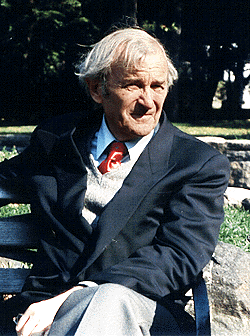

|
Wolfgang Lutz was born in 1913 as the son of a general practioner. He studied medicine in Vienna and Innsbruck and after his graduation joined the medical staff at the II. Medizinische Universitaetsklinik in Vienna. There he published several studies on the absorption of dyes and on the enterohapatic circulation. When working at a medical research institute in Germany, Lutz sutdied problems of sudden drop pressure during high altitude flights (decompression atelectasis) and aspects of cooling and death from exposure. As highlight of this work he was able to resuscitate warmblooded animals even after 60 minutes of continuous cardiac arrest and a body temperature of nearly zero celcius. Lutz habilitated in 1943 at the University of Vienna School of Internal Medicine. After the war Lutz established himself in a referral practice in a small town in Austria. As described in his book, in 1958 he came into contact with nutritional problems and to the conviction that carbohydrates in the civilized diet play a special pathogenetic role. This concept he has not abandoned since; it lead to the present universal theory of carbohydrates as chief vermins for civilized mankind. Lutz now practices internal medicine in Salzburg. This page has had
|